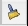
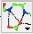
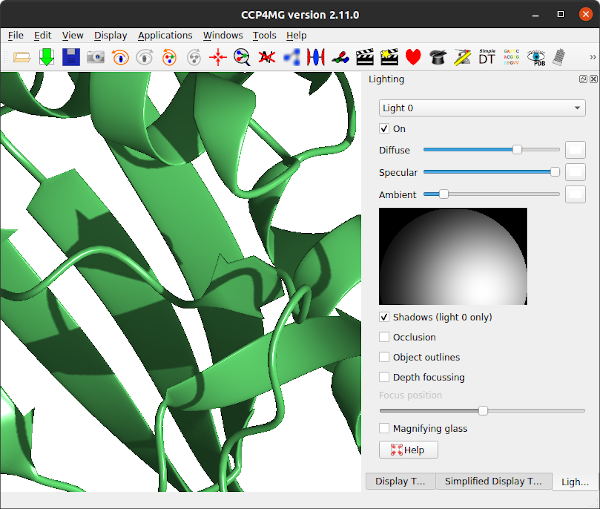

CCP4 Molecular Graphics Workshop
1. Introduction - loading and viewing a PDB/mmCIF file
1.1. Starting CCP4mg
This may depend on your installation but normally:
- Windows
- Double click on the CCP4mg icon on the desktop or search for CCP4mg in the Start menu.
- Linux
- Type ccp4mg in a terminal window.
- Mac
- Double click on the QtMG icon in the Applications folder.
A window with two panes should appear: the large 'main window' and the small 'display table'.
1.2. Copying some data to your own area
Some data files are provided which you should copy to your own area. Or you can try using your own PDB or mmCIF files and MTZ or CCP4 map files. From the File pull-down menu select Get tutorial data. You will be told that a directory called ccp4mg_tutorial has been created in your home area.
1.3. Loading a PDB/mmCIF file
From the file pull-down select Open data file. At the top of the Open data file window there is a picture wizard menu which allows you to select the appearance for a newly loaded model and next to the menu is a small picture showing an example of a model drawn in the current style. Try looking at some of the styles available in the menu but initially select, from the ribbons folder, colour blend thru chain. Now select a file: go to the ccp4mg_tutorial directory in your home area and select 1df7.pdb or a coordinate file of your choice (preferably one containing ligands). Click on the Open button and then close the file selection window.
Another method is to download coordinates from one of the online PDB archives. From the File menu select Download coordinate file and in the download window enter the 4-letter code for a model (e.g 1alz). If you click return in the code window then a default name for the local PDB file is shown in the line below. Click the Apply button and the file will be downloaded to your computer and read into CCP4MG. If you do not know the 4-letter code for the structure that you want then click on the View server web page button to bring up a web browser showing the structure database query page. Once you have found the structure you want you can use either the database download option or the CCP4 interface.
If this is the first model that you have loaded it should be in the centre of the screen but if it is not go to the View menu and select Recentre.
1.4. Changing the view
Rotate: with the cursor in the main window, hold down the left mouse button and drag left-right or up-down. To rotate about out-of-screen axis hold down the shift key and the left mouse button and move mouse in circularmotion.
Zoom: use the mouse wheel or hold down the middle mouse button and drag up-down. Zoom can also be set by hand by doing Display / show/change zoom. This useful in getting the same zoom factor for different images.
Translation: hold down the shift key and middle mouse button and drag. On a Mac laptop with a trackpad, Ctrl+trackpad "button" does the same as right mouse button, Alt+trackpad "button" does the same as middle mouse button.
Centre on an atom: double click on the atom or right-click on the atom and select "Centre on ..."
Clip planes help you see an area of interest by
removing everything in front or behind the centre of the display.
Clip planes can be switched on or off in the Display menu.
Clip plane width: hold down the c key and the
middle mouse button and move mouse up or down.
Fog helps you to see depth by making distant parts of the structure fainter. Fog can be switched on or off in the Display menu.
More mouse and keyboard bindings
1.5. Finding things in the molecule
This tool will move the view so an atom or residue of your choice
is at the centre of the screen.
From the View pull-down menu select Find/centre on...
 In the new window you can select a chain or residue(s) or atom(s)
and click the Centre on button to go to the selection.
In the new window you can select a chain or residue(s) or atom(s)
and click the Centre on button to go to the selection.
Click on the tree view to open the tree view of the model. The tree view works like a file browser with the model split at the first level into peptide, monomers and solvent etc.. Open the monomers folder and select one of the ligands by clicking on it. Click on the Centre on button to go to the selected ligand. The view will change to show the selected ligand.
The tree view selection tool is used in many parts of the program. You can click on more than one line in tree view. The selected atoms and residues are reported in the line edit widget above the tree view. The syntax used for the atom and residue names (e.g. A/27/CA) is loosely based on Linux computer file system names with the different levels in the model hierarchy of chain, residue and atom separated by a forward slash. The residue type might also be included in the residue level (e.g. A/27(ASP)/CA). You can also type a selection command into the line edit widget. See atom naming convention for more information.
 To clear the selection click on the clear icon. The tree view can be closed by clicking elsewhere in the window or hitting the Esc button.
1.6. The Display Table and Picture Wizard
The display table lists all of the loaded data objects (for example each loaded PDB, mmCIF, MTZ or map file becomes one data object). For each data object the display objects are listed one per line. You probably have one (1df7) data object and several display object currently listed.

Usually the easiest way to set up a picture is with the Picture Wizard which you saw when opening the PDB file. It can also be used to change the display of a PDB file that is already loaded. Click on the icon next to the name of the data object to open a menu with several options including Picture wizard.. which opens a window with the picture wizard to change the appearance of the model. Note the button in this window to Delete existing display objects which should be checked to clear the existing picture. You can try some of the options. Note that some of the picture styles require you to select groups of atoms; for example interfaces must be between two groups of atoms. Most styles will make intelligent atom selections automatically.
1.7 Creating a model display object
It is possible to edit the the scenes created by the Picture Wizard or create display objects from new. To see how to do this go back to the display table. For each display object there is an icon and three buttons for the Atom Selection, the Colour Scheme and the Display Style of the display object. Click on the icon and you will see a menu with options to control (among other things) the object visibility. You can also hide or show an object by clicking on the icon with the right mouse button. Hide all of the objects before creating a new one..
Create a new display object: click on the model object icon and select Add model display object from the menu.
A new line should appear in the display table which shows that all of the model is selected and is coloured by Atom type and drawn in display style Bonds. We will look at these three items in reverse order. Click on the button labelled Bonds and you will see a menu with many options for different drawing styles - try these, beware some options are not appropriate for this model and nothing will be drawn. Finally select Cylinders before moving on to click on the button labelled Atom type to see a menu of alternative colouring schemes, try some such as Secondary structure and Residue property / Residue type.
To alter the selection of atoms displayed click on the button labelled All atoms. The menu that appears has some quick selection options such as Peptide and CA trace. Try the Selection browser.. option which opens a new window with a tree view of the model similar to that seen in the Find/centre on interface earlier. You can unselect everything with the Clear button at the bottom of the window. Then try opening the Peptide branch and 'digging down' to select ranges of residues and individual atoms in the models. You will need to click the Apply selection button at the bottom of the window to see the display updated. Beware that if you have a higher level selected (e.g. 'peptide') then everything in the branch is selected even if it is not highlighted.
Now try looking at some of the specialised selection tools accessed from the combobox at the top right of the Selection browser window. When you choose an tool from this combobox a new frame appears near the top of the browser window.
To select just the residues of the binding site for one of the ligands try the following. Choose the neighbours option from the selection tools combobox. In this tool you must enter some 'central' group of atoms or residues and all the neighbouring structure will be selected. In the new frame there is a selection widget similar to that in the Find/centre on interface. Click on the tree icon and select one of the ligands from the Monomers branch. Then click on the Select neighbours button. You will see the residues around the ligand drawn on the display but, by default, the ligand itself is not drawn. You might like to go back to the display table and make the display object of the ligand visible. You can also go back to the tree view of the model and see that the residues selected by the Neighbours tool are now highlighted. You can use the tree view to change the selection for the binding site.
After editing a complex selection you may like to save it: click the Save button at the bottom of the window and, in the new window, enter a name for the selection before clicking the Save button.The saved selections can be accessed from the saved selection tools tab.
Creating hydrogen bonds
 The current display objects are (probably) all model display objects. There are other types of display object to show hydrogen bonds, contacts, surfaces and annotation on the model. For example try creating a hydrogen bond display object. From the model icon menu choose Add display object and HBonds. A new row with the HBonds icon appears in the display table and all the hydrogen bonds in the model will be drawn. To show only the hydrogen bonds between the ligand and the binding site you need to change the first two columns in the display table which are two sets of atoms. First click on the left hand column in the display table (currently labelled All atoms) and select Monomers. To select the binding site try restoring the selection that you saved earlier. Click on the middle row (currently labelled Same as other and select Selection browser. From the tools combobox at the top right of the selection browser window pick saved selection. From the listing of saved selections pick your saved binding site and click Restore. You now see hydrogen bonds between the ligand(s) and the binding site.
To change how the hydrogen bonds are drawn click on the hydrogen bond display object icon and select Drawing style and try the options in the new window.
Electron density maps
Loading a map and model
Load the coordinate file toxd.pdb with the picture wizard style set to Bonds : all atoms. Then load the CCP4 MTZ (structure factor) file toxd_sfall1.mtz. In the new window you can select the structure factor and phase data from the file - accept the defaults by clicking OK. The map will be calculated and displayed.
The display table will then look like this:

There are rows for the loaded coordinate and map data and also a row for a Crystal. The display style is 'Continuous crystal' by default; to understand this try holding down the middle mouse button and dragging around the screen - the map will update automatically to cover the area at the centre of the screen and symmetry related models will appear when necessary. (If the symmetry models do not appear then look at the menu labelled Crystal contents and make sure that the toxd is checked 'on').
For the map display object the contour level has a slider which can be used to changed the contouring level. The scale is in an absolute scale of electrons/A3 but this can be changed to sigma levels (and other defaults can be changed) in Map options on the Preferences window (access this from the Tools pull-down menu).
Better map representation for making images
The map display style can be changed by clicking the display object icon , selecting Surface style.. and then selecting an alternative to the conventional default chicken-wire style. Cylinders style is useful for creating distinct electron density maps for making images.
The appearance of the map can also be improved by reducing the map grid size. If you loaded data from a map file then the grid size is fixed in the file but if you loaded data from an MTZ file then try clicking on the map icon and then select Sampling rate from the menu. Try resetting the grid size to 0.5 - there will be a short delay whilst the map is recalculated.
Another way to simplify an image is to show just the map around the features of interest and clip out extraneous density. To demonstrate this first create an new display object for the toxd model (click on the model icon and select Add model display object) and then select a small number of residues using the selection browser. Displaying these residues in Cylinders style will improve the picture. You may need to find these residues on the display by choosing Centre on from the display object icon menu .
Now to display just the density around these residues click on the map Extent menu and select Clip.. and the selected residues.
Packing diagrams
To show the packing of the molecule in the crystal
first hide the map by unchecking Visible from the map
display icon menu and then change the Crystal Display style from
'Continuous crystal' to Contents of one unit cell.
All the symmetry models necessary to fill a unit cell will be displayed.
The Cell edges can also be toggled on
from the Crystal Display style menu.
The image may be clearer if you change the atom selection
for the toxd model to CA trace.
Clicking on the  icon of
the crystal object and selecting Align view on
will allow you to align the view on a particular crystal plane.
icon of
the crystal object and selecting Align view on
will allow you to align the view on a particular crystal plane.
Molecular surfaces
Creating and colouring a surface
Load a small protein such as 1df7 (small so calculations are quick). There are two ways to create a surface:
- In the Display Style menu of a model display object select Surface
- Click on the model icon () and from the menu select Add display object and Surface to create a surface display object. This approach gives you more options.

The three columns in the Surface row of the display table are the selection of atoms covered by the surface, the selection of context atoms (explained below) and the colour scheme. Calculating a surface may take a little time so when you create a surface display object it is not drawn immediately - you have the chance to select the atoms to be covered by the surface and then you should click on the surface display object icon and select show (or use the short cut of clicking it with the right mouse button).
Most of the items on the surface Colour Scheme menu are the same as those on the model colour scheme menu - the surface will just be coloured the same as the underlying atom. The extra option at the top of the menu are to colour by electrostatic potential (try it).
Covering a limited set of atoms
For example to create a transparent surface over just the binding site for the MTX ligand

First select the atoms to be covered by the surface: from the surface Atom Selection menu select Selection bowser.. and at the top of the new selection browser window choose neighbours selection mode. and in the atom selection line of the window select the monomer //501(MTX). Note that the selection radius is set quite high to 7A and that, by default, solvent and the named central atoms (that is the MTX ligand) are excluded from the selection. Hit the Select neighbours button. If you draw the surface now it will completely wrap around all of the selected atoms as if they were a single separate molecule. To prevent this go to the menu in the second column to select the context for the surface and select All peptide.
Now click on the surface display icon and check Visible. Click on the surface display object icon and select Surface drawing style. Try the various options. The opacity of the transparent surface can be changed by selecting Set transparency from the menu, settting the opacity for the surface object to say 0.4.
To get the image in the picture you need to add a display object to show the ligand MTX so the display table is ..

The scene can be saved to file using the Render.. option at the bottom of the file menu. For a non-stereo image the same size as the CCP4mg graphics window just click the Render button. After a short delay while the image is processed you will be asked to enter the name of an image file and then the image will be displayed in a new window. The output image quality will be much superior to the on-screen quality.
Notes
The calculation parameters and colour scheme for electrostatic potential can be set in Surfaces folder of the Preferences window (find this at the bottom of the Edit menu or the QtMG menu on Macs). More information on surfaces
Text and Extra Images
Entering Text
There are currently two types of text ..
- A 2D legend that can be placed anywhere on the screen and that will not move if the view is changed. To create a legend select Create object and Legend from the File pull-down menu.
- 3D annotation on a model that will move with the model. To create annotation you must have a model loaded then from the model data menu select Add display object and then from the sub-menu Annotation.
The legend and annotation objects have many features in common - try these..
Click on the left-hand button labelled legend (or annotation)
to open a window with a text editor.
Type in some text.
Note that you can customise the text using the Underline, Bold,
Italic buttons or Colour menu. Click the Apply
button to display the text in the main graphics window. By default a
legend is first positioned at the bottom left of the screen. Annotation
text is by default placed at position 0.0,0.0,0.0. If you can not
immediately find the annotation click on the icon
and
select Centre on from the menu;
this should change the view to centre on the text.
Add Annotation
Probably the easiest way to add annotation to click on an atom with the right mouse button and select the Add annotation option. The Add annotation window appears with a text label derived automatically from the id of the clicked atom.

The format of the automatically derived label can be changed using the Annotation format.. section of the interface or the text can just be edited manually. The text font can also be changed in this window. Click Apply to save the annotation. Annotation set up this way is automatically made the moving object (indicated by a red cross on the displat table) so you can now move the annotation to the required position as described below.
Moving Text
From the icon menu try selecting Move object. A red cross appears by the icon to indicate that this is the active moving object. To move the text hold down the x key and the middle mouse button and drag the text.
Adding Other Images
CCP4mg can load and display images in a variety of format including PNG,GIF and JPG and also SVG. The image can be scaled and moved around the screen. This option might be useful for displaying a logo or, say, a graph.
From the File pull-down menu use the Open data file.. file browser and select the file weblogo175.gif. The CCP4 logo will appear at the bottom left of the display window. The image is represented on the display table by a line containing a slider that controls the image scale and a button to open a window to control its position. The image can also be moved by clicking on the icon and selecting Move object. Moving the image is then the same as for moving text as described above. Note that this image has a transparent background and this is probably a desirable feature for many images that you might want to display.
Presentation graphics
Things to consider before making a picture
Once you have set up the picture on the screen things you might want to check:
The appearance of ribbons, cylinders etc. can be changed in the Preferences window (accessed from the Edit menu); click on the Model display folder and choose Model drawing style. If necessary you can set these drawing style parameters for individual graphical objects - from the model display object icon menu select Custom drawing style...
Is the background colour appropriate? Look at the Display menu Background colour.
Is the fog level appropriate? The depth queue fog can be toggled on or off from the Display menu Depth queue fog or the fog level changed using the Clip and fog details option on the Display menu.
Usually the output image will have the same pixel resolution as the display window so choose an appropriate window size and ratio. Note that images to be put into printed publications need to be saved at much higher resolution such as 1000x1000 pixels which implies a bigger image. To get high resolution images it is recommended to save at twice the screen size (see later notes on rendering).
When outputting an image file the program automatically saves the program status to a file with the image file name and the extension .pkl. If the image needs changing later the status file can be loaded via the Restore.. option on the File pull-down menu. A good reason for annotating images within CCP4mg rather than adding labels afterwards is that the annotation is saved and will not need redoing if the image is revised.
Is the lighting appropriate? It is also useful to try moving/editing light sources. The lights can be changed from the Lighting interface which is accessed via the Display menu. By default there is one light source turned on. Up to 8 light sources are possible. Each light can be selected from the menu at the top and individually turned on/off.
The light position can be moved around the display by holding down the left mouse button and moving the mouse in the sphere picture in the bottom right. This simulates moving the light around a hemispherical surface centred on the graphics window rotation centre.
The sliders scale the diffuse, specular and ambient components of the light. The red, green and blue components of each of these can be altered by pressing on the coloured button beside the slider.
Shadows can be used to add realism to a scene by accentuating the sense of depth. The check box on lighting menu turns them on and off. Occlusion is a method of darkening more buried parts of structure.
Render
Set up any picture - if you have nothing already try loading rnase.pdb and choose one of the ribbons styles from the Picture Wizard at the top of the file browser window.
A rendered image can be output in a variety of formats; from the File menu select Render click the Render button. After a while you will be required to enter a file name. A window should appear displaying the new image.
Now try the options for ray tracing and stereo images. Note that for ray-traced shadows to be visible you will need to have a light source somewhere in front of the molecule so that shadows from elements of structure at the front of the model appear on elements of structure further back. There is a button to open the lighting interface which allows moving and changing the light sources.
Ultra smooth ribbons is nice but only sensible if you have a close up of a small section of ribbon/worm.
Beware! Slow in ambient occlusion method really means slow.
Some additional details to help produce images consistent with journal requirements:
- Most journals require that images have a resolution which is a minimum of a certain number of dots per inch (dpi). This number only makes sense when you also know the size of the actual image on the final paper. For example your image may be 6 inches wide on physical paper and your journal asks for 600 dpi images. In the top left Output image size pane of the Render dialog select the Use dpi option and probably the Keep graphics window aspect (unless you require a specific height also) and set the width and dpi as appropriate.
- When stereo pairs are required the width setting should be halved if one wishes a final image to be the same width as a mono image. So for the dpi case above a stereo image which occupies a space 6 inches wide on a page should have a width setting of 3 inches. However, in the case where a journal specifies a stereo separation as a certain number of inches, then that number should be used for the image size.
Screenshot
CCP4mg can now produce really nice pictures just by taking simple screenshots (File/Screenshot) which in many cases are comparable with the quality are produced by "Render" (and can be better) and produced much more quickly.
To produce high-quality screenshots it is necessary to make sure that shaders are turned on (Edit / QtMG / Preferences / Display / Drawing quality).
One thing which is particularly useful about the screenshot method is that pictures with "occlusion" can be produced in a few seconds, rather than the several hours "Render" might take.
If you are zoomed in close on a small number of spheres, using the "Perfect spheres" drawing style will produce much nicer images.
The notes about high-resolution images for journals mention in the Render section above also apply to screenshots. In fact, low resolution images are not as well anti-aliased (smoothed) with screenshots compared to "Render" so making sure the resolution is high enough is more important for screenshots.
Note that not all features required for high quality screenshots (shaders, ability to create pictures bigger than physical screen, ability to do shadows and occlusion) are available on all systems. This is due to graphics driver limitations. "Render" is available on all systems.
Superpose Proteins
Load homologous proteins
Select two homologous proteins such as 1df7 and 4dfr (hint to remove existing models: from the Edit menu select For all data and Close).
To set a suitable colour and display style for all models open the Picture wizard window from the Applications menu. In the picture wizard window select colour molecule from the bonds folder in the list at the top of the window. Click the Create picture button to redraw the scene. (Note that the Picture Wizard changes are applied to all visible models and by default any existing display objects are deleted.)
Superpose by secondary structure matching
From the Applications pull-down menu select Superpose.

In the new window check that the Superpose mode (at the top of the window) is Secondary structure matching(SSM) and hit the Superpose button. The models will be superposed. To show the equivalent residues and distances between CA atoms check the box labelled Show matchs with...
In the Models to superpose frame of the interface is a column labelled Show match. After an SSM superposition the column will contain comboboxes for each moving models. The 4dfr structure contains two equivalent chains and the SSM algorithm finds alternative possible matches for both chains which you can review by stepping though the options in the combo box in the Show match column.
Superposing binding sites
The SSM method gives a good global superposition but sometimes localised regions can be better superposed by matching only a selection of residues in the region. A better local superposition can particularly help in comparing binding sites. Selecting the appropriate residues to superpose may require some time and thought but the Match close residues method is a simple automatic method that is worth a try. The method requires that the models are already roughly superposed and that a limited set of residues are selected in the FIXED model. The algorithm matches residues in the moving model that are close to the selected residues in fixed model and superposes them.
The 1df7 and 4dfr structures both contain the ligand MTZ. To optimise superposition of the MTZ binding site select the Match close residues method and then for the fixed model select the MTZ binding site by clicking the model selection widget lassoo and pick Neighbourhood.. from the menu to open a new window.

In the new window select the MTZ ligand as the centre of the neighbourhood and click the Select neighbours botton. This window closes and the seelction command appears in the main Superpose window. You can see which residues have been selected by checking the box labelled Highlight selected atoms. Now click the Superpose button to superpose the close residues. There will be only a slight movement to optimise the superposition of the binding site.
Superposing the ligand
This part of the tutorial introduces the tools for manually defined matches and uses these tools to superpose equivalent ligands.
Click on the User defined matches method. The window will change significantly to show a User defined matches frame.

At the top of this frame is a list box of the defined matches that is initially empty except for a New match.. option. To the right of the list is a set of buttons with tools to edit the match list. Beneath the list are tools for specifying one match. There are various modes for a match: atom, residue, residue range, monomer etc. and the selection widget will be changed appropriately for each match mode. From the combo box labelled match mode select monomer. Use the selection widgets to select the MTX ligand for 1df7 (// /501[MTX] - beware the chain does not have a name) and 4dfr (A/160[MTX]). You must click the Save this match button to get this match saved to the list. The matches between the two MTX molecules should be shown on the display. You can now click Superpose to superpose the two ligands.
The matching algorithm for monomers is capable of finding the equivalent atoms in non-identical molecules. It uses a graph matching approach which looks at the atom element types and the bonds between the atoms. It takes no account of the atom names.
Further matches can be added using the interface or they can be selected by clicking on atoms in the model with right mouse button and using the Superpose options which appear at the bottom of the popup menu. Try using the menu item Superpose - select this / Residue to select an active site residue then click on the equivalent residue in the other model and the menu should now include Superpose - match this to with a list of unmatched items in the other model.
Matches selected by clicking on the model are shown in the match list and can be edited. A possible useful feature is the ability to switch off a match: click on the match in the list to make it the edited match then uncheck the box labelled Use match and remember to click the Save match button. The inactive matches are shown greyed-out in the match list.
Investigating a Structure
Introduction
Load any molecule of interest to you or use any one from the tutorial. It is easiest to work if the Display style is Bonds or Fat bonds. If you want to look at two or more homologous structures then the structures can be superposed - see the Protein Superposition tutorial .
Geometry
This section introduces some basic tools for interrogating the structure. From the Application menu select Geometry.
Double-click on atoms with the left mouse button to see them listed in the Geometry window. The window lists: the distance between an atom and the previously clicked atom; the bond angle between an atom and the two preceeding atoms and the torsion angle defined by the atom and the three preceeding atoms. Shift+double-click will start a new "tree" of selections. i.e. the atom's distance to the previous one will not be shown.
The Clear button will clear the list and the displayed lengths.
Hydrogen Bonds
To display the hydrogen bonds within the loaded model click on the model icon and select the Add display object.. .. Hydrogen bonds. Note also the Close contacts option on the same menu that has a very similar interface to the hydrogen bond interface that we are about to look at. Now all hydrogen bonds within the structure are displayed and, in the display table, an extra line appears under the model name.
 From the Hbonds icon menu select Drawing style
and in the new window check the box labelled Label with distance/bond length.
From the Hbonds icon menu you can also select List HBonds
and the CCP4mg file viewer will open listing all of the hydrogen bonds in one tab.
It is possible to save such listings to a file via the Save option
on the file viewers File drop-down menu.
From the Hbonds icon menu select Drawing style
and in the new window check the box labelled Label with distance/bond length.
From the Hbonds icon menu you can also select List HBonds
and the CCP4mg file viewer will open listing all of the hydrogen bonds in one tab.
It is possible to save such listings to a file via the Save option
on the file viewers File drop-down menu.
Several tools show listing in the file viewer: close contacts, secondary structure and the solvent accessibility.
It is possible to display only the hydrogen bonds between two specified sets of atoms. The two sets of atoms are controlled by the menus in the first two columns of the table. By default the first atom selection is All atoms; click on this and change it to Main chain (in a sub-menu from Peptide). The second set of atoms remains Same as other so only HBonds between main chain atoms and main chain atoms are shown. Now try changing the Same as other to Side chains to see all HBonds between main chain and side chain atoms.
The criteria for HBonds can be changed in the Preferences window (on the Edit pull-down menu) - look in the Model analysis folder for Hydrogen bonds. The algorithm and parameters are explained in the Structure Analysis documentation.
If you want to include hydrogen bonds when creating an image you may want to have more options on display style or to be able to add or delete some bonds. These things are possible if you export the hydrogen bonds as vectors.
Displaying vectors
Generate a vector file by clicking on the Hbond display object icon
and selecting Export vectors.
In the file selection window enter the name for a vector file and make sure that the Read exported vector file into CCP4mg checkbox (at the top of the window) is checked on. When you click the Save button the display window should not change significantly but a new vector object should be listed in the display window. The HBonds have been written to a file and then that file has been loaded and displayed in a similar style to the original data. To avoid confusion with the original data either delete or hide the original HBonds.
Now look at the new vector object in the display table and click on the right button (the button is probably labelled 'complement dashed') to open a window controlling the display style of the vectors. For example style dashed cylinder works well if your model is displayed as cylinders or ball and stick. You may want to change the cylinder radius and dash length.
Also try changing options in the Labels section.
From the Vector data icon menu select Edit vectors to open a window with tools to edit the vector. At the top of the new window is a list of the current vectors representing hydrogen bonds. Clicking on an item in this list will load that vector into the edit tools in the rest of the window. The tools show the selection for the start and end atom and the annotation that appears by the vector. This interface can be used to add or delete 'hydrogen bond' vector.
After changing the vectors it is possible to
save the changes to the vector file. (Note that, unlike say model
coordinate files and map files the vector file contains information on
how you would like the data to be displayed). To see the format of a vector file.
From the Vector data icon menu select List data
to open a file viewer listing the vectors and their appearance
(the format is explained in the
Vector documentation).
Solvent Accessibility Surface
The solvent accessible surface area is the surface area that is accessible to a 'water molecule'. In calculations the 'water molecule' is usually represented by a sphere of about 1.4Å radius (see Analysis documentation). To colour a model by the SAS area: from the Colour scheme menu select Residue property and then Residue solvent access. There may be a short pause for the calculation and then the model is coloured with mostly blue on the inside of the model and red residues on the outside of the model.
When the display object is coloured by some interesting chemical property the display object icon menu has an item List colour data. This will open the file viewer listing the solvent accessibility of residues and atoms.
The parameters for the SAS calculation are accessible in the Preferences window (on the Edit menu) in the Model analysis folder Solvent accessible surface. There is little reason to change these but you may want to change the colour coding. To do this open the Model colours folder in the Preferences window and select Residue solvent access.

The window has a table showing the parameter value and the colour for that parameter value. Every residue on the display is given a colour, dependent on its SAS, which is interpolated from the fixed values and colours in the table. If a residue SAS falls outside the normal range of values in the table then it is given one of the colours, specified at the top of the window, for below or above the normal range. The 'outside normal range' colours are usually contrasting the normal colours in order to draw attention to outliers but they could be made the same as the normal range colours. Note that any solvent in your model is coloured green (or the below normal range colour) because it is usually excluded from the SAS calculation and assigned a value of -1.0.
Note that there is also an option to colour by atom SAS: from the Colour scheme menu select Atom property and then Atom solvent access.
Making Movies
Introduction
CCP4mg can create movies in animated GIF or MPEG format or the screenshots written out by CCP4mg can be input to some other movie creation program. Either GIF or MPEG format can be incorporated into presentations such as PowerPoint but animated GIFs are more acceptable on web pages. To make a movie the program outputs a series of images which will be the frames of the movie and these are then compiled into one movie file. If you are making a longer, more complex, movie you can create several scenes which can be merged together later.
For a simple movie the only thing that moves is the camera; the movement helps the user to see the 3D depth and a movie often gives a better idea of the overall structure than separate, fixed viewpoints. For this sort of movie you select either the required movement (e.g. a rotation about the vertical axis) or choose the start and end view and the program will glide between these two views.
More complex movies can have some movement of models or changes to other properties of the displayed data (see the Movie documentation). You can set up and save the two or more displays and the movie will be created to interpolate smoothly between the different displays.
Movies may look impressive if there is lots on the display and lots of movement but an audience will probably understand more about the chemistry if the pictures are simple and the movie is slow and repeats. For a presentation several short movies are probably more flexible than one long movie. Remember also that many data projectors have limited resolution and the maximum image size may be 600 by 600 pixels.
Making a simple movie with moving camera
From the Applications menu choose Movie editor and New movie and enter a name for the movie. A directory called movie_name.ccp4mg_presentation will be created and all files created by the movie application will be saved here. The movie application window appears on the screen.
Set up a picture and make sure the model is in the centre of the display. Now make a snapshot of the current display by right-mouse clicking on the frame in the movie window labelled Save status here and select Save current view/display from the pop-up menu. A small image of the current display should appear in the movie window. This snapshot is labelled 00001, and subsequent snapshots will be labelled 00002, 00003 etc..

Beneath the image are some options; set the View to rotate about y. See what this does by selecting Preview from the Action menu. This will show you, in the main graphics window, what would appear in the movie but will not record anything. You can also try other options on the View menu: try setting to rock or transform. For the transform option you will need to click on the Details button and in the Transform details section of the Details window enter some transformation (for example 360 for X-rotation) and hit the Apply button.
To record the scene select Make movie in stages and Record frames from the Action menu. This will run through the transformation saving screenshots to files named movie_name.ccp4mg_presentation/scene_00001/frame_00001.png etc.. If screenshots are made offscreen then the main display window is not necessarily updated but you will see the progress reported in the top bar of the movie window. If the screenshots are NOT made offscreen (the usual default) then you will see the display updated but you must be careful not to obscure the main graphics window as this will corrupt the picture. You can check or change how screenshots are made by going to the Preferences and, from the Images and movies folder, select Screenshots.
When recording screenshots is finished go again to the Action menu and select Make movie in stages and Make movie scene. The separate screenshots are now merged into one movie file; this can take a little time, there is small window showing that the compile is being done and then the resultant movie is played automatically or can be played by selecting Play from the Action menu. By default an animated GIF file is created and replayed in the CCP4mg file viewer. Like most web browsers this will automatically play animated GIFs on a continuous loop.
Now try making the movie zoom-in from the view of the whole model to focus on a ligand. First make a copy of the first, 00001 snapshot by right-mouse clicking on it and selected Copy from the menu; then right-mouse click on the Save status here frame and select Paste. Now, in the main graphics window, zoom-in to a ligand - you may want to rotate and translate as well to get the best possible view. Then save that view by right-mouse clicking on the movie window frame labelled Save status here and select Save current view/display from the pop-up menu. The view of the ligand should now be displayed as the third snapshot in the movie window. In the interface below the second snapshot change the View menu to glide to and, in the new menu that appears, select 00003.
Now try Previewing the scenes. You may want to slow the movement down by changing the time from 2 seconds to something greater. You can also change a snapshot easily, for example try changing the final view zoomed-in on the ligand: first, restore the current view by double clicking with the left mouse button on the zoomed-in snapshot; then change the view in the main window; then go back to the zoomed in snapshot in the movie window and click on it with the right mouse button and select Replace. The snapshot in the movie window should be updated to the new view.
If you want to preview, record or compile just one scene then select the snapshot by clicking on it with the left mouse button. It will be highlighted by a cyan border and any actions will be applied to only this scene.
To continue the movie from here you might want to display the ligand binding site in more detail and try rocking the view.
Making a movie with changing electron density level
See the movie here.
{kind=link}
Delete any loaded data (from Tools menu select For all data and Delete.) First close any current data using the Edit pull-down menu option Close. Then load the model dUTPase.pdb with the picture wizard style (at the top of the file selection window) set to ligand binding site:site and make sure the Open picture wizard choices box is checked. You will then see a window offering a selection of ligand - choose D/1(DUX) from the Monomer menu and click Create picture. The picture includes some residues that are more remote from the ligand shown as thin bonds - hide or delete this display object.
Now load the experimental data file dUTPase.mtz. After selecting the experimental data file there is a window in which you should select the data F_pf868_P41 and PHICalc and also choose a finer grid size, such as 0.5Å. Probably after the experimental data is loaded there will be several symmetry copied of the model displayed; since these do not help in making this picture they can be switched off by going to the initial line in the Display Table, the Crystals object, and in the third column change Continuous crystal to Symmetry off.
To display only a limited region of map, that covers the selected ligand atoms, go to the first column in the map display object line (currently labelled Extent 10.0) and select from the menu Clip.. and to dUTPase D/1(DUX). The map will now be clipped to the selected atoms.
We want to make a movie in which the electron density contouring alternates smoothly between two contour levels. To define the two extreme contour levels you need to save snapshots at the two extreme positions. So first choose a low contour level (use the slider bar on the right side of the map contour line in the Display Table) and then right-mouse click on the Insert next snapshot here and select Insert current view/display from the pop-up menu and then set the high contour level and make a snapshot of that too.
In the interface below the first electron density snapshot:
- choose a time period for the recording - 3 seconds is reasonable.
- set the View mode to Glide to and the frame number to 00002 (or the id of the second frame)
- Click on the Details button and in the details window check the box labelled Rock back to initial position. This will cause the electron density level displayed in the movie to oscillate between the two extreme values that you have set in the snapshots.
- select the range of snapshots to preview/record by clicking on the first with left mouse button then, holding down the Shift key, clicking on the second snapshot. The two electron density snapshots should now be highlighted in gold.
Select Preview from the Action menu to see the result. The display should rock slowly and the contour level should gradually change. If you are happy click the Record button. You may want to try changing the time or rock parameters (in the Details window).